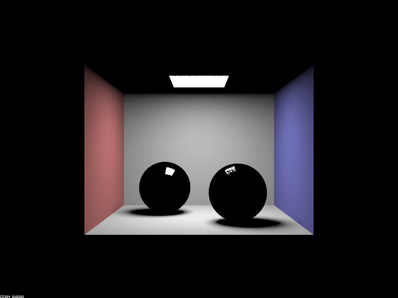
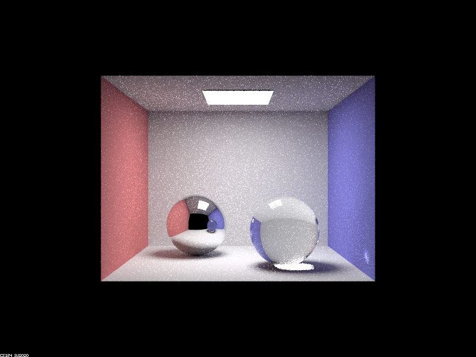
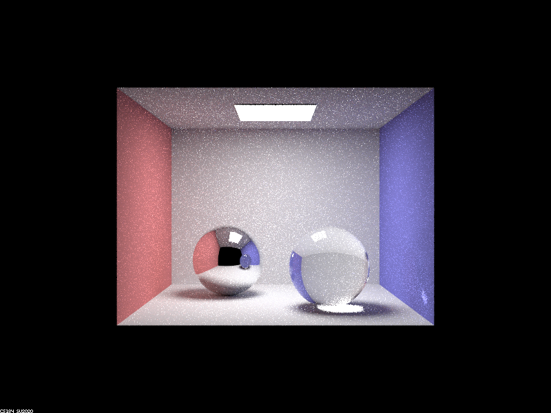
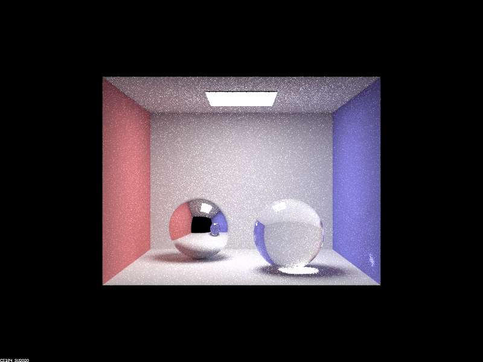

Part 1. Mirror and Glass Materials
Show a sequence of six images of scene `CBspheres.dae` rendered with `max_ray_depth` set to 0, 1, 2, 3, 4, 5, and 100. The other settings should be at least 64 samples per pixel and 4 samples per light. Make sure to include all screenshots.
CBspheres.dae rendered at 64 samples with max ray depth of 0, 1, 2, 3, 4, 5, and 100.

|

|

|

|
|

|

|
|

|
Point out the new multibounce effects that appear in each image.
At 0 bounces, we have no light bounces in our image. At 1 bounce, we see colors of the room but no real refraction or reflection in our spheres. At 2 bounces, we see the mirror effect of the left sphere, and the right sphere begins seeing some reflective properties. At 3 bounces, the sphere sees some change (roof becomes colored) and the right sphere begins exhibiting its refractive properties. At 4 bounces, the rays from the refracted sphere get shown in the mirrored effect of it in the left sphere as well as the light spot on the right blue wall. At 5 bounces, we see no significant changes, and the same is true for 100 bounces.
Explain how these bounce numbers relate to the particular effects that appear. Make sure to include all screenshots.
For 0 bounces, we only see the light source since there are no reflections that happen. When we get to 1 bounce, the colors of the room and the light on the black spheres are shown because we’re beginning to see the direct effect of light on its surroundings. Then, at 2 bounces, the room that was “generated” at 1 bounce gets shown in the left mirror sphere, and the right sphere sees small reflective properties. It is only at 3 bounces that we actually see the refractive properties of the right glass sphere, since the light needs to bounce within the sphere first before the light is refracted. At 3 bounces, we can also see the shadow of the glass sphere change according to its refractive properties. At 4 bounces, we see the secondary effects of the refractive sphere, i.e. the left mirror sphere begins reflecting the right spheres refractiveness, and the right wall has a spot of light from the sphere’s refraction. From there, at 5 bounces, if we zoomed in enough, we could perhaps see the right wall’s spot of light’s reflection in the left mirror sphere. However, there are few changes, and the same is true at 100 bounces. It is worth noting that the mirror sphere effectively reflects the changes to its surroundings one “step” late, i.e. changes at 2 bounces would be mirrored in the 3 bounces image.
Part 2. Microfacet Material
Show a screenshot sequence of 4 images of scene `CBdragon_microfacet_au.dae` rendered with $\alpha$ set to 0.005, 0.05, 0.25 and 0.5. The other settings should be at least 128 samples per pixel and 1 samples per light. The number of bounces should be at least 5. Describe the differences between different images. Note that, to change the $\alpha$, just open the .dae file and search for `microfacet`.
Parts 1 and 4 done.
Show two images of scene `CBbunny_microfacet_cu.dae` rendered using cosine hemisphere sampling (default) and your importance sampling. The sampling rate should be fixed at 64 samples per pixel and 1 samples per light. The number of bounces should be at least 5. Briefly discuss their difference.
Parts 1 and 4 done.
Show at least one image with some other conductor material, replacing `eta` and `k`. Note that you should look up values for real data rather than modifying them arbitrarily. Tell us what kind of material your parameters correspond to.
Parts 1 and 4 done.
Part 3. Environment Lightl
Pick one *.exr* file to use for all subparts here. Include a converted *.jpg* of it in your website so we know what map you are using.In a few sentences, explain the ideas behind environment lighting (i.e. why we do it/how it works).
Parts 1 and 4 done.
Show the *probability_debug.png* file for the *.exr* file you are using, generated using the `save_probability_debug()` helper function after initializing your probability distributions.
Parts 1 and 4 done.
Use the `bunny_unlit.dae` scene and your environment map *.exr* file and render two pictures, one with uniform sampling and one with importance sampling. Use 4 samples per pixel and 64 samples per light in each. Compare noise levels. Make sure to include all screenshots.
Parts 1 and 4 done.
Use a different image (if you did part 2, we recommend `bunny_microfacet_cu_unlit.dae`) and your environment map *.exr* file and render two pictures, one with uniform sampling and one with importance sampling. Use 4 samples per pixel and 64 samples per light in each. Compare noise levels. Make sure to include all screenshots.
Parts 1 and 4 done.
Part 4. Depth of Field
For these subparts, we recommend using a microfacet BSDF scene to show off the cool out of focus effects you can get with depth of field!In a few sentences, explain the differences between a pinhole camera model and a thin-lens camera model.
Your response goes here.
Show a "focus stack" where you focus at 4 visibly different depths through a scene. Make sure to include all screenshots.
Your response goes here.
Show a sequence of 4 pictures with visibly different aperture sizes, all focused at the same point in a scene. Make sure to include all screenshots.
Your response goes here.
Partner
We split the project up with Victor mainly working on part 1 and Minjune mainly working on part 4. We realized from previous projects that if we were stuck, sometimes it was helpful if the other person came in with a fresh mind having not worked with the first person, as this would provide a potentially new perspective. Thus, we helped each other debug whenever we were stuck. This project helped us learn a lot in that it added on to what we had from project 3-1, acting effectively as building blocks on top of each other in our learning.